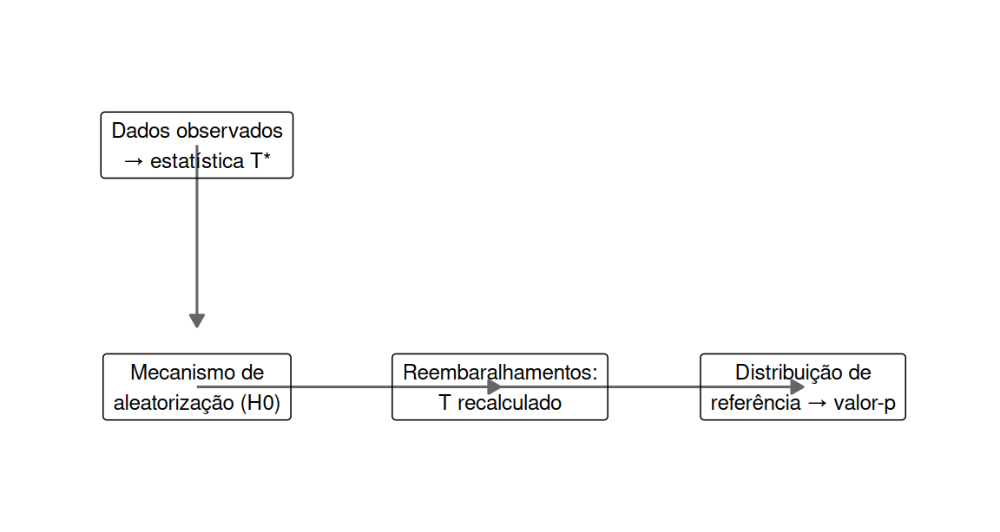
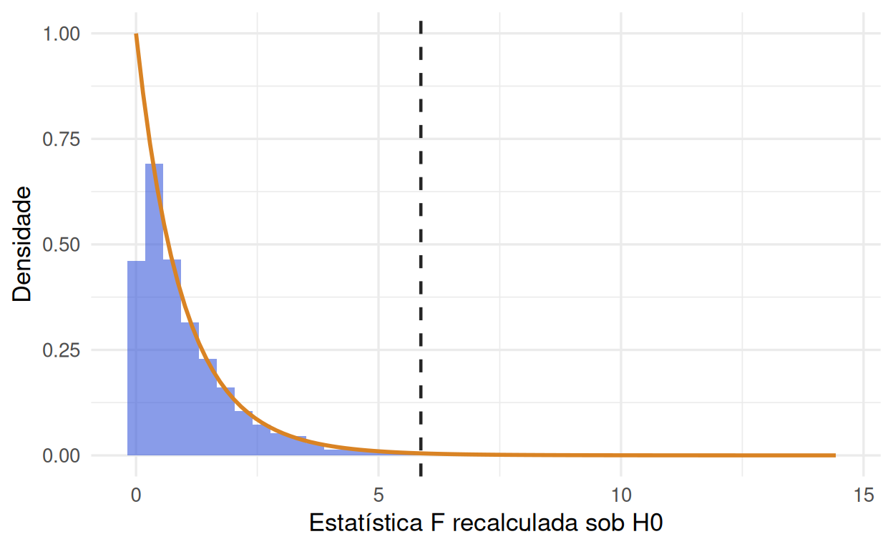

3.1 Princípios de aleatorização: a ideia de um teste de aleatorização
Antes de introduzir qualquer suposição distribucional, vale a pena perguntar: de onde vem, em termos lógicos, a validade de um teste estatístico em um experimento aleatorizado? A resposta de Fisher é elegante e não depende de normalidade alguma (Fisher, 1935b).
Considere um DCA com \(t\) tratamentos e \(N\) unidades experimentais ao todo. Sob a hipótese nula de que o tratamento não tem efeito algum, o valor que cada unidade experimental produziria é o mesmo, não importa qual tratamento ela receba — os rótulos de tratamento são, sob \(H_0\), completamente permutáveis entre as unidades. O mecanismo físico de aleatorização escolheu uma entre as \(\binom{N}{n_1, n_2, \ldots, n_t}\) formas possíveis de distribuir os tratamentos pelas unidades; sob \(H_0\), todas essas formas são igualmente prováveis e teriam produzido exatamente os mesmos \(N\) valores de resposta, apenas reagrupados de outra maneira.
Um teste de aleatorização (ou teste de permutação) explora essa ideia diretamente:
- Calcula-se uma estatística de teste \(T\) nos dados observados (por exemplo, a estatística \(F\) da ANOVA, definida na Seção 3.2.5).
- Reembaralham-se os rótulos de tratamento entre as \(N\) unidades, muitas vezes (idealmente, todas as permutações possíveis; na prática, um grande número delas sorteado aleatoriamente), e recalcula-se \(T\) a cada reembaralhamento.
- O valor-\(p\) de aleatorização é a proporção de reembaralhamentos que produziu um \(T\) tão grande quanto (ou maior que) o observado.

Figura 3.1: O esquema geral por trás de todo teste de aleatorização, em quatro passos: dados observados produzem uma estatística observada T; o mecanismo de aleatorização do próprio delineamento gera reembaralhamentos sob H0 e T é recalculado em cada um; a distribuição desses valores é a distribuição de referência; localizar T nela define o valor-p.
O diagrama resume o princípio geral por trás não só do teste de aleatorização, mas de qualquer teste de hipótese baseado em simulação: (i) computar a estatística nos dados reais; (ii) simular repetidamente sob um modelo explícito de \(H_0\); (iii) localizar a estatística observada na distribuição simulada. O reembaralhamento de rótulos descrito acima é esse esquema, com o “modelo de \(H_0\)” sendo, literalmente, o mecanismo físico de aleatorização do próprio delineamento — não uma suposição extra importada de fora dos dados.
Esse procedimento não assume normalidade, nem variâncias iguais, nem qualquer outra forma distribucional — sua validade vem inteiramente do mecanismo de aleatorização em si (Edgington & Onghena, 2007). O que a teoria normal-linear faz, a partir da Seção 3.2.1, é oferecer uma aproximação ao teste de aleatorização exato — uma aproximação excelente quando os erros são razoavelmente próximos de normais, e que tem a enorme vantagem prática de fornecer fórmulas fechadas em vez de exigir reembaralhamento computacional.
set.seed(48)
condicao <- c("Nenhuma", "Sonora", "Visual")
n_por_grupo <- 12
dados_tr <- tibble(
sujeito = 1:(3 * n_por_grupo),
condicao = factor(rep(condicao, each = n_por_grupo), levels = condicao),
tempo_reacao = c(rnorm(n_por_grupo, 480, 45),
rnorm(n_por_grupo, 512, 45),
rnorm(n_por_grupo, 555, 45))
)
F_obs <- summary(aov(tempo_reacao ~ condicao, data = dados_tr))[[1]][["F value"]][1]
R_perm <- 4000
F_perm <- replicate(R_perm, {
rotulo_embaralhado <- sample(dados_tr$condicao)
summary(aov(dados_tr$tempo_reacao ~ rotulo_embaralhado))[[1]][["F value"]][1]
})
tibble(
Método = c("Teste F (teórico)", "Teste de aleatorização"),
`Valor-p` = c(pf(F_obs, 2, 33, lower.tail = FALSE), mean(F_perm >= F_obs))
) %>%
kable(digits = 4, caption = "Valor-p teórico vs. valor-p por aleatorização, mesmos dados") %>%
kable_styling(full_width = FALSE)| Método | Valor-p |
|---|---|
| Teste F (teórico) | 0.0066 |
| Teste de aleatorização | 0.0073 |

Figura 3.2: Distribuição de referência: os 4.000 valores de F recalculados sob reembaralhamentos aleatórios dos rótulos de condição (histograma), com o F observado nos dados reais (linha tracejada) e a densidade F(2,33) teórica sobreposta (curva). A área à direita da linha tracejada, sob o histograma, é o valor-p de aleatorização; sob a curva teórica, é o valor-p do teste F.
O histograma (distribuição empírica de aleatorização) e a curva \(F(2,33)\) teórica praticamente se sobrepõem, e a linha tracejada (\(F\) observado) cai na cauda direita de ambas — confirmação visual de que a aproximação normal-linear captura bem a distribuição de referência exata neste exemplo, sem que nenhuma das duas dependa de suposição alguma sobre a forma de \(Y\): a curva \(F\) é válida sob normalidade dos erros; o histograma é válido apenas pelo mecanismo de aleatorização em si, qualquer que seja a distribuição verdadeira dos dados.
Os dois valores-\(p\) ficam muito próximos — é exatamente o comportamento esperado quando os pressupostos do modelo normal-linear (que introduzimos a seguir) são razoáveis. A Seção 3.5 trata de como verificar, na prática, se essa aproximação é confiável.
3.1.1 De onde vêm os graus de liberdade \((2,33)\): a ponte entre aleatorização, variância decomposta e \(F\)
Vale amarrar, com todo o rigor já disponível neste ponto do livro, por que a curva \(F(2,33)\) é uma boa aproximação da distribuição de aleatorização — não apenas que ela é, como a Figura 3.2 já mostrou empiricamente. A resposta liga três coisas que, até aqui, apareceram em capítulos diferentes: a decomposição da variação em fontes (Capítulo 1, Seção 1.3), a forma aditiva do modelo que essa decomposição força sob aleatorização (Seção 1.3.1 do Capítulo 1) e a contagem de graus de liberdade via posto de matrizes de projeção e diagramas de Hasse (Capítulo 2, Seções 2.7 e 2.2).
O que permanece fixo em cada reembaralhamento, e o que muda. Reembaralhar os rótulos de tratamento entre as \(N=36\) unidades, como no chunk anterior, não move nenhum valor de resposta — os 36 tempos de reação observados são exatamente os mesmos a cada repetição, só a partição deles em três grupos de 12 muda. Consequentemente, \(SQ_{\text{Total}} = \mathbf{Y}'\mathbf{M}\mathbf{Y}\) (Capítulo 2, Seção 2.7.1) é idêntica em todas as 4.000 reamostragens — só \(\mathbf{X}\) muda a cada reembaralhamento (a matriz de delineamento reflete a nova partição), e com ela a forma como \(SQ_{\text{Total}}\) se reparte entre \(SQ_{\text{Trat}}=\mathbf{Y}'(\mathbf{P}_X- \tfrac1N\mathbf{J})\mathbf{Y}\) e \(SQ_E=\mathbf{Y}'(\mathbf{I}_N-\mathbf{P}_X)\mathbf{Y}\). Essa é, literalmente, a mesma decomposição de fontes de variação do Capítulo 1 — fonte 1 (tratamento) versus fontes 2+3 combinadas (o que sobra) — só que agora vista sob 4.000 partições diferentes dos mesmos 36 valores, em vez de uma única partição observada.
Por que os graus de liberdade não mudam. Embora \(\mathbf{X}\) mude a cada reembaralhamento, seu posto não muda: qualquer reembaralhamento continua produzindo \(t=3\) grupos não vazios (o sorteio apenas troca quais 12 unidades vão para cada grupo, nunca o número de grupos nem o tamanho de cada um, que ficam fixados pelo desenho). Logo \(\mathrm{posto}(\mathbf{X})=3\) em toda reamostragem, e a contagem por subtração do diagrama de Hasse (Capítulo 2, Seção 2.2) — \(\text{gl} (\text{Trat})=t-1=2\), \(\text{gl}(\text{Erro})=N-t=33\) — vale identicamente para as 4.000 partições, não só para os dados observados. É exatamente por isso que a forma da curva de referência (uma \(F\) com \((2,33)\) graus de liberdade) é estável sob reembaralhamento, mesmo sem nenhuma suposição de normalidade: os graus de liberdade são uma propriedade do desenho (\(t\) e \(N\) fixos), não da distribuição dos erros — o que muda de uma reamostragem para outra é só onde, dentro dessa forma fixa, cada estatística \(F\) recalculada cai.
X_dca_tr <- model.matrix(~ condicao, data = dados_tr)
gl_trat_matriz <- qr(X_dca_tr)$rank - 1 # posto(X) - 1 (Cap. 2, Secao matriz-projecao)
gl_erro_matriz <- nrow(dados_tr) - qr(X_dca_tr)$rank # N - posto(X)
c(gl_trat = gl_trat_matriz, gl_erro = gl_erro_matriz)## gl_trat gl_erro
## 2 33Os valores batem exatamente com o \((2,33)\) já usado em df(..., df1 = 2, df2 = 33) na Figura
3.2 — não por coincidência ou por termos “sabido de antemão” quais graus de
liberdade usar, mas porque \(2=3-1\) e \(33=36-3\) vêm diretamente do posto de \(\mathbf{X}\), exatamente
como a regra de subtração do diagrama de Hasse prediz, e esse posto é uma função só de \(t\) e \(N\)
(quantos grupos o desenho tem e quantas unidades ao todo), não de \(\mathbf{Y}\).
Por que a aproximação \(F\) funciona tão bem aqui. A teoria normal-linear (Capítulo 2, Seção 2.10) prevê que, se os erros fossem exatamente normais e i.i.d. — a leitura de \(\varepsilon_{ij}\) que a Seção 1.3.1 do Capítulo 1 justificou como consequência da aleatorização, não como suposição gratuita —, então \(SQ_{\text{Trat}}/\sigma^2\) e \(SQ_E/\sigma^2\) seriam qui-quadrado independentes com \(2\) e \(33\) graus de liberdade sob \(H_0\), e sua razão (normalizada pelos respectivos graus de liberdade) seguiria \(F_{2,33}\) exatamente, não apenas aproximadamente. A distribuição de aleatorização, por outro lado, não usa normalidade alguma: ela é exata por construção, qualquer que seja a distribuição de \(Y\), porque enumera (ou amostra) diretamente as \(\binom{36}{12,12,12}\) formas de particionar os mesmos 36 valores. As duas curvas da Figura 3.2 quase se sobrepõem porque, quando \(n_i=12\) por grupo já não é pequeno e a distribuição de \(Y\) não é patologicamente assimétrica, o Teorema Central do Limite aplicado a cada média de grupo \(\bar Y_{i\cdot}\) torna a distribuição de \(SQ_{\text{Trat}}\) sob reembaralhamento cada vez mais próxima da qui-quadrado teórica que a normalidade exigiria (Box et al., 2005; Edgington & Onghena, 2007) — a aproximação melhora com \(n\), e pioraria em desenhos com \(n_i\) muito pequeno ou \(Y\) muito assimétrico (o cenário de heterocedasticidade da Seção 3.5, adiante). Em suma: aleatorização garante que o modelo aditivo \(Y_{ij}=\mu+\tau_i+\varepsilon_{ij}\) é uma leitura válida dos dados (Seção 1.3.1); a decomposição de variância em fontes fixa os graus de liberdade \((t-1,\,N-t)\) como propriedade do desenho, geometricamente visível no diagrama de Hasse (Capítulo 2); e é só quando essas duas peças já estão no lugar que a normalidade entra — não para criar a validade da inferência, que já vem da aleatorização, mas para trocar reembaralhamento computacional por uma fórmula fechada, a \(F_{t-1,N-t}\).
3.1.2 O modelo linear deduzido da aleatorização
Até aqui usamos o modelo \(Y_{ij}=\mu+\tau_i+\varepsilon_{ij}\) como ponto de partida, justificando-o informalmente. Vale agora fazer melhor: deduzi-lo do ato físico de sortear, sem postulá-lo. É esta derivação — devida a Cornfield (1944) e sistematizada por Kempthorne (1952) — que separa um curso de planejamento de experimentos de um curso de regressão. No fim dela teremos algo inesperado: o erro que emerge do sorteio é correlacionado, e ainda assim mínimos quadrados ordinários continuam ótimos.
3.1.2.1 A população conceitual de respostas
Considere \(N\) unidades experimentais e \(t\) tratamentos, e defina
\[ Y_{ij} \;=\; \text{resposta que a unidade } j \text{ apresentaria sob o tratamento } i, \qquad i=1,\dots,t,\quad j=1,\dots,N . \]
O quadro \(t\times N\) dos \(Y_{ij}\) é a população conceitual de respostas. Ela não é observável: de cada unidade \(j\) veremos uma linha apenas, a do tratamento que o sorteio lhe deu. São exatamente os resultados potenciais de Neyman-Rubin da Seção 3.2.3, agora organizados como uma tabela — e é essa tabela que torna a derivação possível.
Escreva as médias marginais \(\bar Y_{i\cdot}\) (sobre unidades, para o tratamento \(i\)), \(\bar Y_{\cdot j}\) (sobre tratamentos, para a unidade \(j\)) e \(\bar Y_{\cdot\cdot}\) (geral). A identidade algébrica exata de qualquer tabela de dupla entrada é
\[ Y_{ij}=\bar Y_{\cdot\cdot} +\underbrace{(\bar Y_{i\cdot}-\bar Y_{\cdot\cdot})}_{\text{efeito do tratamento}} +\underbrace{(\bar Y_{\cdot j}-\bar Y_{\cdot\cdot})}_{\text{efeito da unidade}} +\underbrace{(Y_{ij}-\bar Y_{i\cdot}-\bar Y_{\cdot j}+\bar Y_{\cdot\cdot})}_{\text{interação tratamento}\times\text{unidade}} . \]
O último termo é uma interação entre tratamento e unidade: o tratamento \(i\) favorecendo especialmente a unidade \(j\). A aditividade no sentido estrito consiste em supor esse termo nulo — e convém ser franco sobre o que se está supondo: que o efeito de trocar o tratamento \(i\) pelo \(k\) é o mesmo em toda unidade. É uma suposição, não uma conveniência de notação, e é precisamente a que o Capítulo 4 voltará a interrogar ao discutir aditividade em blocos.
3.1.2.2 A variável de seleção de Cornfield
Falta a peça que liga a população conceitual ao dado observado: uma representação matemática do sorteio. Seja \(y_{ir}\) a resposta da \(r\)-ésima réplica do tratamento \(i\) e defina
\[ \delta_{ir}^{\,j}= \begin{cases} 1, & \text{se a } r\text{-ésima réplica do tratamento } i \text{ foi aplicada à unidade } j,\\ 0, & \text{caso contrário.} \end{cases} \]
Os índices têm papéis distintos, e confundi-los é o erro comum aqui: \(ir\) designa uma posição no plano experimental (a 2ª réplica do tratamento A), enquanto \(j\) designa uma unidade física (o voluntário nº 5). A aleatoriedade de \(\delta\) não vem de natureza alguma: vem do papelzinho sorteado pelo pesquisador. Sob aleatorização completa,
\[ P(\delta_{ir}^{\,j}=1)=\frac1N, \qquad P\big(\delta_{ir}^{\,j}=1 \,\big|\, \delta_{i'r'}^{\,j'}=1\big)=\frac{1}{N-1} \;\; (ir\neq i'r',\; j\neq j'), \qquad \sum_{j=1}^{N}\delta_{ir}^{\,j}=1 . \]
A última identidade diz apenas que toda posição do plano é preenchida por exatamente uma unidade. Com ela, a relação de seleção que conecta o observável ao conceitual é uma soma que “filtra” a população:
\[ y_{ir}=\sum_{j=1}^{N}\delta_{ir}^{\,j}\,Y_{ij}. \]
3.1.2.3 A dedução
Substituindo a identidade algébrica já simplificada pela aditividade estrita, \(Y_{ij}\approx\bar Y_{\cdot\cdot}+(\bar Y_{i\cdot}-\bar Y_{\cdot\cdot})+(\bar Y_{\cdot j}-\bar Y_{\cdot\cdot})\), na relação de seleção, e usando \(\sum_j\delta_{ir}^{\,j}=1\) para eliminar os termos que não dependem de \(j\):
\[ y_{ir} =\underbrace{\bar Y_{\cdot\cdot}}_{\mu} +\underbrace{(\bar Y_{i\cdot}-\bar Y_{\cdot\cdot})}_{\tau_i} +\underbrace{\sum_{j=1}^{N}\delta_{ir}^{\,j}\,(\bar Y_{\cdot j}-\bar Y_{\cdot\cdot})}_{\omega_{ir}} \qquad\Longrightarrow\qquad \boxed{\;y_{ir}=\mu+\tau_i+\omega_{ir}\;} \]
O modelo linear não foi suposto: foi obtido. E note o que \(\omega_{ir}\) é — não um “ruído” abstrato, mas o efeito da unidade específica que o sorteio colocou naquela posição. Daí o nome erro de aleatorização, e daí a diferença decisiva em relação ao \(\varepsilon_{ij}\) de Gauss-Markov: as propriedades de \(\varepsilon\) são assumidas; as de \(\omega\) são deduzidas da distribuição do sorteio, que o próprio pesquisador escolheu.
3.1.2.4 As propriedades de \(\omega\) — e uma surpresa
Escreva \(u_j=\bar Y_{\cdot j}-\bar Y_{\cdot\cdot}\) para o efeito da unidade \(j\), de modo que \(\sum_j u_j=0\), e defina \(\sigma_u^2=\frac{1}{N-1}\sum_j u_j^2\). Tomando esperanças sobre a distribuição de aleatorização (indicada por \(\mathbb E_R\)):
\[ \mathbb E_R(\omega_{ir})=\sum_{j}\frac1N\,u_j=0, \qquad \mathrm{Var}_R(\omega_{ir})=\sum_j \frac1N u_j^2=\Big(1-\frac1N\Big)\sigma_u^2 , \]
e, para duas posições distintas \(ir\neq i'r'\),
\[ \mathrm{Cov}_R(\omega_{ir},\omega_{i'r'}) =\frac{1}{N(N-1)}\Big[\Big(\sum_j u_j\Big)^2-\sum_j u_j^2\Big] =-\frac{\sigma_u^2}{N} \;<\;0 . \]
A covariância é negativa, e a razão é puramente combinatória: as unidades são sorteadas sem reposição, então a unidade que foi parar numa posição não pode estar em outra. Em forma matricial, empilhando as \(N\) observações,
\[ \mathrm{Var}_R(\boldsymbol\omega)=\mathbf V=\sigma_u^2\Big(\mathbf I_N-\tfrac1N\mathbf J_N\Big), \]
que não é diagonal. Ou seja: a aleatorização, que é o que garante a validade da inferência, produz por construção erros correlacionados — exatamente a hipótese que o teorema de Gauss-Markov (Seção 2.6 do Capítulo 2) exige que não seja violada.
As identidades acima não são aproximações assintóticas: valem exatamente. Com \(N\) pequeno dá para conferir isso enumerando todas as aleatorizações possíveis, em vez de simular.
N <- 7
set.seed(7)
u <- rnorm(N, 0, 3); u <- u - mean(u) # efeitos de unidade (somam zero)
sigma2_u <- sum(u^2) / (N - 1)
# todas as N! atribuicoes possiveis de unidades a posicoes
permutacoes <- function(v) {
if (length(v) == 1) return(matrix(v))
do.call(rbind, lapply(seq_along(v),
function(i) cbind(v[i], permutacoes(v[-i]))))
}
omega <- matrix(u[permutacoes(seq_len(N))], ncol = N) # uma linha por aleatorizacao
tibble(
Quantidade = c("E(ω)", "Var(ω)", "Cov(ω, ω′)"),
Enumerado = c(mean(omega[, 1]),
mean(omega[, 1]^2),
mean(omega[, 1] * omega[, 2])),
Fórmula = c(0,
(1 - 1 / N) * sigma2_u,
-sigma2_u / N)
) %>%
kable(digits = 10, caption = "Propriedades do erro de aleatorização, sobre todas as N! atribuições") %>%
kable_styling(full_width = FALSE)| Quantidade | Enumerado | Fórmula |
|---|---|---|
| E(ω) | 0.000000 | 0.000000 |
| Var(ω) | 12.232455 | 12.232455 |
| Cov(ω, ω′) | -2.038742 | -2.038742 |
3.1.2.5 Zyskind: por que ainda assim usamos mínimos quadrados ordinários
Se \(\mathrm{Var}(\boldsymbol\omega)=\mathbf V\neq\sigma^2\mathbf I\), o teorema de Gauss-Markov não se aplica, e o estimador de variância mínima passa a ser o de mínimos quadrados generalizados de Aitken (1936), \(\hat{\boldsymbol\beta}_{GLS}=(\mathbf X'\mathbf V^{-1}\mathbf X)^{-} \mathbf X'\mathbf V^{-1}\mathbf Y\). Seria desconfortável: todo o curso usa MQO.
O resultado que resolve a questão é de Zyskind (1967). Sob o modelo de Aitken, o estimador de mínimos quadrados ordinários permanece BLUE se e somente se existe uma matriz \(\mathbf Q\) tal que
\[ \mathbf V\mathbf X=\mathbf X\mathbf Q, \]
isto é, se e somente se o espaço-coluna de \(\mathbf V\mathbf X\) está contido no de \(\mathbf X\) — \(\mathcal C(\mathbf V\mathbf X)\subseteq\mathcal C(\mathbf X)\).
Verifiquemos a condição no nosso caso. Como o DCA tem intercepto, \(\mathbf 1\in\mathcal C(\mathbf X)\), e portanto \(\mathbf J\mathbf X=\mathbf 1(\mathbf 1'\mathbf X)\) tem todas as colunas proporcionais a \(\mathbf 1\), logo em \(\mathcal C(\mathbf X)\). Daí
\[ \mathbf V\mathbf X=\sigma_u^2\Big(\mathbf X-\tfrac1N\mathbf J\mathbf X\Big)\in\mathcal C(\mathbf X), \]
e a condição de Zyskind é satisfeita.
trat <- factor(rep(1:3, each = 3)) # t=3 tratamentos, 3 replicas, N=9
X <- model.matrix(~ trat)
V <- diag(9) - matrix(1 / 9, 9, 9) # sigma_u^2 fatorado (nao altera a condicao)
Q <- qr.solve(X, V %*% X) # resolve V X = X Q em Q
max(abs(V %*% X - X %*% Q)) # zero numerico => condicao satisfeita## [1] 3.885781e-16A conclusão é a que faltava para fechar o argumento, e merece ser dita sem rodeios: embora os erros de aleatorização sejam correlacionados, podemos proceder como se não fossem. Não porque a correlação seja pequena ou desprezível, mas porque a estrutura particular que o sorteio induz — simetria composta com covariância negativa constante — é exatamente uma para a qual MQO continua sendo o melhor estimador linear não viesado. A licença é formal, não uma concessão prática.
Vale reter o desenho completo do argumento, porque ele reaparece no Capítulo 4 para blocos (Hinkelmann & Kempthorne, 2008): a aleatorização gera o modelo linear (não o supõe), gera um erro correlacionado (não i.i.d.), e gera, pela condição de Zyskind, a permissão de analisá-lo com a ferramenta mais simples. As três coisas vêm do mesmo sorteio.